Flashing Support#
Use flash.sh to flash a Jetson device with Bootloader
and the kernel, and optionally, flash the root file system to an internal or external storage device.
Use l4t_initrd_flash.sh to flash internal or external media connected to a Jetson device. This script uses the recovery initial ramdisk to do the flashing, and can flash internal and external media using the same procedure. Because this script uses the kernel for flashing, it is generally faster than flash.sh. For more details, see Flashing with initrd.
By default, the board configuration and the partition layout support external media with a storage capacity of 64GB or higher. To accommodate external media with a lower storage capacity, you need to modify the ROOTFSSIZE variable in the board configuration and the num_sectors field in the partition layout. For more information on how to modify the partition layout for external storage devices, see Flashing to an External Storage Device.
Before You Begin#
The following directories must be present:
bootloader: Bootloader plus flashing tools, such as TegraFlash, CFG, and BCTkernel: A kernel image/Image, DTB files, and kernel modulesrootfs: The root file system that you downloadedThis directory starts empty. You populate it with the sample file system.
nv_tegra: User space binaries and sample applications
Additionally, before running these commands, you must connect your host computer to the Jetson device’s recovery port with a USB cable.
Basic Flashing Script Usage#
Display the current usage information for flash.sh by running flash.sh -h, using the script included in the release. The basic usage is:
$ sudo ./flash.sh [options] <board> <rootdev>
Where:
optionsis one or more command-line options. All of the options are optional. See Flashing Script Usage for information about the options.<board>specifies the configuration to be applied to the device to be flashed. Values are listed in the Jetson Modules and Configurations table.`flash.shgets the configuration from a configuration file named<board>.conf.<board>.confspecifies the location of a partition layout file which specifies what storage devices are flashed on the Jetson target. For more detailed explanation of<board>.conf, see Explaining Board Configuration File and Generating a Flash Image to Flash Later.<rootdev>specifies the type of device to be used as the root file system,. Use the valuemmcblk0p1to flash a local storage device (eMMC or SD card, depending on platform), as distinguished from an NFS server, for example.
Basic Flashing Procedures#
This section describes some common procedures for flashing one or more target devices.
Installing the Flash Requirements#
Run the following command:
$ sudo tools/l4t_flash_prerequisites.sh
Flashing the Target Device#
Put the target device into Force Recovery Mode.
Power on the carrier board and hold down the RECOVERY button.
Press the RESET button.
Run the
flash.shscript that is in the top-level directory of BSP for this release. The command line must specify the target board (for example,jetson-agx-orin-devkit) for the root file system:$ sudo ./flash.sh <board> <rootdev>
Where:
<board>specifies the configuration of the target device, as described by Jetson Modules and Configurations.<rootdev>specifies the device on which the root file system is located, as described in Basic Flashing Script Usage.
For examples, run the script like this:
$ sudo ./flash.sh <board> mmcblk0p1
Flashing by Using a Convenient Script#
NVIDIA provides a convenient flashing script which automatically detects the Jetson device’s type of carrier board:
$ sudo ./nvsdkmanager_flash.sh [--storage <storage> ]
where <storage> can be nvme0n1p1 or nvme1n1p1 for flashing to an external NVMe SSD, sda1 for flashing to an external USB storage drive, or mmcblk0p1 or mmcblk1p1 for flashing to an external SD card, depending on the target device.
On Jetson Orin series, flashing with the --storage option flashes also flashes the internal eMMC storage with a small boot partition that points to the external storage option as the root file system.
Without --storage option, It is expected that the Jetson devices has either internal emmc or an SD card attached if the Jetson does not have an internal emmc storage.
Flashing the Target Device to Mount a rootfs Specified by a UUID#
For an internal storage device (e.g. eMMC or an SD card), enter the command:
$ sudo ./flash.sh <board> internal
This command generates a new UUID for the root file system partition and stores it in the
bootloader/l4t-rootfs-uuid.txtfile. You can specify your own UUID by writing the UUID to this file and execute the following command.:$ sudo ./flash.sh --reuse-uuid <board> internal
For an external stage device (e.g. an NVMe or USB device), enter the command:
$ sudo ./flash.sh <board> external
This command generates a new UUID for the root file system partition and stores it in the
bootloader/l4t-rootfs-uuid.txt_extfile. You can specify your own UUID by writing the UUID to this file and execute the following command.:$ sudo ./flash.sh --reuse-uuid <board> external
Flashing the Target Device to Mount a rootfs Specified by the Partition Device Name#
Note
The commands below only flash a small boot partition to the Jetson’s internal eMMC storage to mount the USB/NVMe SSD that is externally attached to the Jetson. These commands do not actually flash the root file system contents onto the externally connected storage devices.
For a partition on a USB storage device connected to the Jetson device, enter this command:
$ sudo ./flash.sh <board> sda<x>
For a partition on an NVMe storage device connected to the Jetson device, enter this command:
$ sudo ./flash.sh <board> nvme0n1p<x>
Where:
<board>specifies the configuration of the target device, as described in the table of device names in the topic Quick Start.<x>is a number specifying theAPPpartition’s position on the storage device, e.g.sda1for a USB device, ornvme0n1p1for an NVMe storage device.
Explaining Board Configuration File and Generating a Flash Image to Flash Later#
The board configuration file <board> is a bash script that defines several bash variables. These variables specify the Boot Configuration Table (BCT), Device Tree Blob (DTB), kernel, configuration files, firmwares, and partition layout to be used by flash.sh.
The board configuration file specifies a partition configuration file location in the EMMC_CFG variable which defines what storage devices are flashed by the flashing tool and the partition layout on those storage devices. The flashing tool flashes only the storage devices described in the partition configuration layout.
flash.shallows one partition configuration file defined in the board configuration file.l4t_initrd_flash.shallows one partition configuration file defined in the board configuration file and one more partition configuration file passed through-coption when flashing with--external-deviceoption, which defines the partition layout of the external device.
Refer to Partition Configuration for more information about the partition configuration file format.
Typically, NVIDIA-provided board configurations rely on values retrieved from EEPROM and the chip to define these bash variables. To generate a flash image for later flashing:
Place the Jetson target into recovery mode.
Use this command to retrieve the EEPROM and chip information from the board, and to subsequently generate a flash image:
$ sudo ./flash.sh --no-flash <board> mmcblk0p1
In instances where the Jetson target in recovery mode is unavailable, it is still possible to generate flash image by using EEPROM and Chip values obtained manually through environment variables. For example:
$ sudo BOARDID=3701 BOARDSKU=0000 FAB=500 BOARDREV=500 CHIP_SKU=D0 RAMCODE=0 FUSELEVEL=fuselevel_production ./flash.sh --no-flash jetson-agx-orin-devkit mmcblk0p1
Such information is usually available on the Jetson target specification sheet. Alternatively, it can be retrieved manually if you have physical access to the Jetson target:
Place the Jetson target into recovery mode.
Run this command to generate
bootloader/cvm.binandbootloader/chip_info.bin_bak:$ sudo ./flash.sh --no-flash --no-systemimg <board> mmcblk0p1
Retrieve the environment variables above using these commands:
$ cd bootloader $ BOARDID=$(./chkbdinfo -i cvm.bin) $ BOARDSKU=$(./chkbdinfo -k cvm.bin) $ FAB=$(./chkbdinfo -f cvm.bin) $ BOARDREV=$(./chkbdinfo -r cvm.bin) $ CHIP_SKU=$(./chkbdinfo -C chip_info.bin_bak) $ RAMCODE_ID=$( ./chkbdinfo -R chip_info.bin_bak) $ RAMCODE=$(echo "ibase=2; ${RAMCODE_ID//:/}" | bc)
After generating the flash image, you can proceed with flashing at a later time using these commands:
$ cd bootloader
$ sudo bash ./flashcmd.txt
Cloning a Jetson Device and Flashing#
Copy
system.imgfrom the file system partition you want to flash from. Enter the command:$ sudo ./flash.sh -r -k APP -G <clone> <board> mmcblk0p1
Where:
<clone>determines the names of the copies.<board>specifies the configuration of the target device.
This step creates two copies of
<clone>in the<top>directory, a sparsed image (smaller than the original) named<clone>, and an exact copy named<clone>.raw. The time it takes to back up a partition depends on the size of the partition.For example, if
<clone>isoriginal.img,flash.shcreates a sparsed image namedoriginal.imgand an exact copy namedoriginal.img.raw.Copy
<clone>.imgto the<BSP>/bootloader/system.imgdirectory, where<BSP>is the directory in which the Jetson Linux BSP is installed. Enter the command:$ sudo cp <clone>.img bootloader/system.img
Flash the image to the target board.
If the target board has already been flashed, reflash the clone image to the
APPpartition. The time it takes to back up a partition depends on the size of the partition. To back up the partition, run the following command:$ sudo ./flash.sh -r -k APP <board> mmcblk0p1
If the target board has never been flashed, flash all of the board’s partitions. Enter the command:
$ sudo ./flash.sh -r <board> mmcblk0p1
Note
If root file system of the source device for clone is resized during
oem-config, the eMMC configuration file of destination device must be updated accordingly. For example, withjetson-agx-orin-devkit, root file system (APP) is the final partition beforesecondary_gpt. If theAPPis resized to maximum allowed size, theallocation_attributeofAPPpartition inLinux_for_Tegra/bootloader/generic/cfg/flash_t234_qspi_sdmmc.xmlmust be updated from 0x8 to 0x808.Note
To clone the rootfs partition of the external storage device, for example, the NVMe storage device, see Cloning rootfs with initrd.
Backing Up and Restoring a Jetson Device#
NVIDIA provides tools for creating a backup image of a Jetson device and restoring the Jetson from a backup image.
Backing up a Jetson device differs from cloning one (see Cloning a Jetson Device and Flashing) because a backup image includes every partition in the device’s internal eMMC and QSPI memory, while a clone contains only the APP file system partition.
The tools for backing up and restoring a Jetson device are in this directory in the BSD:
/Linux_for_Tegra/tools/backup-restore/
Instructions for backing up and restoring a device are in the file README_backup_restore.txt in the same directory.
The time it takes to back up or restore a partition depends on the size of the partition.
RCM Booting to the NFS#
Put the device into reset/recovery mode.
Power on the carrier board and hold down the Recovery button.
Press the Reset button.
Enter the command:
$ sudo./flash.sh -N <ip_addr>:<root_path> --rcm-boot <board> eth0
Where:
<ip_addr>is the IP address of the host system<root_path>is the path to the NFS rootfs<board>is the configuration of the target device as specified in Jetson Modules and Configurations.
Flashing Script Usage#
This section complements Basic Flashing Script Usage by providing detailed information about flash.sh command-line options and other aspects of flash.sh usage.
Command-line option |
Description |
|---|---|
-c <cfgfile> |
Pathname of a flash partition table configuration file. |
-d <dtbfile> |
Pathname of a device tree file. |
-f <flashapp> |
Name of the flash application to be used. Flash
applications are stored in the bootloader
directory. The default flash application is
|
-h |
Prints descriptions of the command-line syntax and command-line options. |
-k <partition_id> |
Partition name or number specified in |
-m <mts_preboot> |
Name of the MTS preboot file to be used, such as
|
-n <nfs_args> |
Static NFS network assignments:
|
-o <odmdata> |
ODM data. |
-p <bp_size> |
Total eMMC hardware boot partition size. |
-r |
Skips building |
-t <tegraboot> |
Pathname of a tegraboot binary, such as
|
-u <PKC_key_file> |
Pathname of a file containing the PKC key used for an ODM fused board. |
-v <SBK_key_file> |
Pathname of a file containing the Secure Boot Key (SBK) used for an ODM fused board. |
-w <wb0boot> |
Pathname of a warm boot binary, such as
|
-x <tegraid> |
Processor chip ID. The default value is:
|
-z <sn> |
Serial number of the target board. |
-B <boardid> |
Board ID. |
-C <args> |
Kernel command-line arguments. If this option is
specified, it overrides the default values defined
for Kernel command-line arguments are documented in the
file
In the case of NFS booting, use this option to set
NFS boot-related arguments if the |
-F <flasher> |
Pathname of a flash server, such as |
-G <file_name> |
Reads the boot partition and saves the image to the specified file. |
-I <initrd> |
Pathname of the initrd file. The default value is null. |
-K <kernel> |
Pathname of a kernel image file such as |
-M <mts boot> |
Pathname of an MTS boot file, such as |
-N <nfsroot> |
NFS root address, such as
|
-R <rootfs_dir> |
Pathname of the sample rootfs directory. |
-S <size> |
Size of the rootfs in bytes. Valid only for an internal root device. KB/MB/GB suffixes represent units of 1000,
10002, and 10003. The suffixes
For example, |
--bup |
Generates Bootloader update payload (BUP). |
--clean-up |
Cleans up the BUP buffer when the script is flashing a multi-spec BUP. |
--multi-spec |
Enables support for building a multi-spec BUP. |
--no-flash |
Performs all steps except physically flashing the
board. The script creates a |
--no-systemimg |
Prevents creation or re-creation of |
--sparseupdate |
Only flash partitions that have changed. Currently supports only SPI flash memory. |
--usb-instance <id> |
USB instance to connect to; |
--user_key <user_key_file> |
Pathname of a file that contains a user key that can be used to encrypt
and decrypt kernel, kernel-dtb,
and initrd binary images. If |
--read-info |
Read and display board related info, fuse info, and EEPROM content. |
--read-ramcode |
Generate read_ramcode script to allow reading of ramcode before flashing. |
--gen-read-eeprom |
Generate read_eeprom script with all signed binaries. |
Finding the usb-instance#
The flash.sh script supports a usb-instance to flash a specific Jetson on a host that has multiple Jetson in recovery mode. This section provides information about how you can find out which usb-instance to use.
Place all devices into recovery mode.
Run the following command:
$ grep <idProduct> /sys/bus/usb/devices/*/idProduct
where
idProductis the ID for usb ID for recovery mode of the device. For example, 7023 is for Jetson AGX Orin.The result will be something like the following:
/sys/bus/usb/devices/1-1.1/idProduct:7023
1-1.1is the usb-instance number you want to use to specify which device you want to flash
Flashing to a USB Drive#
Jetson devices can be booted from a mass storage class USB device with bulk-only protocol, such as a flash drive. Hot plugging is not supported; the flash drive must be attached before the Jetson device is booted. You can manually set up a flash drive for booting as explained in Manually Setting Up a Flash Drive for Booting.
All Jetson devices can boot from internal storage using a boot partition and can mount an external USB drive as the root file system.
NVIDIA provides a way to simplify flashing to a USB drive that is connected to a Jetson device. For details, see Setting Up a USB Drive as a Boot Device or Root File System using Flash with initrd.
Manually Setting Up a Flash Drive for Booting#
Confirm that the device can boot successfully from eMMC. If it cannot, correct the problem by flashing to eMMC first.
Connect the flash drive to the host computer.
Check the flash drive’s device name (such as
/dev/sdb):$ sudo lsblk -p -d | grep sd
Run the command:
$ sudo <env-var> ./tools/kernel_flash/l4t_initrd_flash.sh [ -S <rootfssize> ] -c <config> --external-device sda1 --direct <sdx> <board> external
Where
<sdx>is the device name that your host computer assigned to the flash drive.<config>is the USB partition layout. See the example inLinux_for_Tegra/tools/kernel_flash/flash_l4t_t234_nvme.xml.<board>is the type of Jetson device to be flashed. For details, see the Jetson Modules and Configurations table.
You can also specify
<rootfssize>as the size of the APP partition. This value is different from the total size of the external storage device, which is defined by thenum_sectorsfield in<config>. If you change thenum_sectorsfield in<config>, you must specify a new<rootfssize>so that it is a few GiB smaller than the total size of the external storage device to fit the APP and other partitions.If you run the command without a device in recovery mode plugged in, you must specify it.
For example, if the host computer assigns the flash drive device name
sdb, the command for Jetson AGX Orin is:$ sudo BOARDID=3701 BOARDSKU=0000 FAB=TS4 ./tools/kernel_flash/l4t_initrd_flash.sh -c tools/kernel_flash//flash_l4t_t234_nvme.xml --external-device sda1 --direct sdb jetson-agx-orin-devkit external
By default,
Linux_for_Tegra/tools/kernel_flash//flash_l4t_t234_nvme.xmlonly supports a 64GiB SD card and above. If you want to flash a 32GiB SD card, you must modify thenum_sectorsfield inLinux_for_Tegra/tools/kernel_flash//flash_l4t_t234_nvme.xmlso thatnum_sectors * 512 = 32GiB. The command to run is:$ sudo BOARDID=3701 BOARDSKU=0000 FAB=TS4 ./tools/kernel_flash/l4t_initrd_flash.sh -c tools/kernel_flash//flash_l4t_t234_nvme.xml -S 20GiB --external-device sda1 --direct sdb jetson-agx-orin-devkit external
You have to specify
<rootfssize>to be 20 GiB to be smaller than the SD card size.Note
For more information, read Workflow 11 in the
README_initrd_flash.txtfile, which is in theLinux_for_Tegra/tools/kernel_flashdirectory.Plug the flash drive into the target device and power it on or reboot it.
If your device still boots from its internal storage, you might need to modify the UEFI’s boot-order using
efibootmgror UEFI GUI.
Manually Setting Up a Flash Drive to Use as Root File System#
Prepare the flash drive similarly to Manually Setting Up a Flash Drive for Booting.
Flash the Jetson device to mount the external flash drive:
$ sudo ./flash.sh <board> sda1
Preparing Files to Boot from a Flash Drive with Secure Boot#
When the Secureboot package is installed, the kernel file /boot/Image must be signed, and the signature file must be saved as /boot/Image.sig.
If you use flash.sh to flash a device with Secure Boot installed, the script automatically creates and stores the signature file. If you create a signature file manually, you must also save it manually. For more information, see Secure Boot.
Setting Up a USB Drive as a Boot Device or Root File System using Flash with initrd#
By flashing with initrd you can flash to an external USB device attached to a Jetson device. For more information, see Flashing to an External Storage Device.
Flashing to an NVMe Drive#
Jetson devices can be booted from an NVMe drive. Hot-plugging is not supported; the NVMe drive must be attached before the Jetson device is booted.
You can manually set up an NVMe drive for booting by following the steps in Manually Setting Up an NVMe Drive for Booting.
All Jetson devices can boot from internal storage using a boot partition and mount an external NVMe drive as the root file system.
NVIDIA provides a way to simplify flashing to an NVMe drive that is connected to a Jetson device. For details, see Setting Up an NVMe Drive as a Boot Device or Root File System using Flash with initrd.
Manually Setting Up an NVMe Drive for Booting#
Confirm that the device can boot successfully from eMMC. If it cannot, correct the problem by flashing to eMMC first.
Connect the flash drive to the host computer.
Check the NVMe drive’s device name (such as
/dev/nvme0n1):$ lsblk -d -p | grep nvme | cut -d\ -f 1
Note that
-d\must be followed by two spaces.Note
The Jetson Orin Developer Kit provides two PCIe slots to connect NVMe storage devices: the PCIe C4 slot for a longer M2.2280 NVMe card and the PCIe C7 slot for a shorter M2.2230 NVMe card.
When a single NVMe device is connected to any of the two slots, it is enumerated as
nvme0n1.When two NVMe devices are connected to the two PCIe slots simultaneously, the NVMe device in slot C4 is enumerated as
nvme0n1, and the NVMe device in slot C7 is enumerated asnvme1n1. For flashing, you should set--external-devicetonvme0n1p1ornvme1n1p1, depending on the target NVMe device being flashed. In this case, the<rootdev>must be specified asexternalso that the flashing tool sets up the kernel command line with theroot=PARTUUID=<part-uuid>option. For more information, read Workflow 3 in theREADME_initrd_flash.txtfile, which is in theLinux_for_Tegra/tools/kernel_flashdirectory.
Run the command:
$ sudo <env-var> ./tools/kernel_flash/l4t_initrd_flash.sh [ -S <rootfssize> ] -c <config> --external-device nvme0n1p1 --direct <nvmeXn1> <board> external
Where
<nvmeXn1>is the device name that your host computer assigns to the NVMe drive.<config>is the NVMe SSD partition layout. See the example inLinux_for_Tegra/tools/kernel_flash//flash_l4t_t234_nvme.xml.<board>is the type of Jetson device to be flashed. For details, see the Jetson Modules and Configurations table.
You can also specify
<rootfssize>as the size of the APP partition. This value is different from the total size of the external storage device, which is defined by thenum_sectorsfield in<config>. If you change thenum_sectorsfield in<config>, you must specify a new<rootfssize>so that it is a few GiB smaller than the total size of the external storage device to fit the APP and other partitions.If you run the command without a device in recovery mode plugged in, you must specify it.
For example, if the host computer assigns the flash drive device name
nvme1n1p1, the command for Jetson AGX Orin is:$ sudo BOARDID=3701 BOARDSKU=0000 FAB=TS4 ./tools/kernel_flash/l4t_initrd_flash.sh -c tools/kernel_flash//flash_l4t_t234_nvme.xml --external-device nvme0n1p1 --direct nvme1n1p1 jetson-agx-orin-devkit external
Note
For more information, read Workflow 11 in the README_initrd_flash.txt file, which is in the
Linux_for_Tegra/tools/kernel_flashdirectory.Plug the flash drive into the target device and power it on or reboot it.
If your device still boots from its internal storage, you might need to modify the UEFI’s boot-order using
efibootmgror the UEFI GUI.
Setting Up an NVMe Drive Manually to Use as Root File System#
Prepare the NVMe device similarly to Manually Setting Up an NVMe Drive for Booting.
Flash your Jetson to mount the external NVMe drive:
$ sudo ./flash.sh <board> nvme0n1p1
Preparing Files to Boot from an NVMe Drive with Secure Boot#
See Preparing Files to Boot from a Flash Drive with Secure Boot.
Setting Up an NVMe Drive as a Boot Device or Root File System using Flash with initrd#
By flashing with initrd you can flash to an external NVMe SSD attached to a Jetson device. For more information, see Flashing to an External Storage Device.
Flashing to an SD Card#
Applies to: only the Jetson Orin Nano Developer Kit.
This section describes the procedures to flash and use an SD card for the Jetson Orin Nano developer kit with the p3767-0005 module.
Prerequisites#
Download Etcher for Linux. Etcher is the tool you use to copy an image to an SD card. It is available from the balenaEtcher home page.
Download Etcher for Linux x64 (64-bit) (AppImage). Make the downloaded file executable.
Note
NVIDIA recommends using Etcher to copy an image to an SD card because it is an easy and foolproof method. If you prefer, you can perform this operation with the Linux dd command. If you use this method, you need not download Etcher.
Generating an Image to be Flashed to an SD Card#
Applies to: only the Jetson Orin NX series
If you have not already done so, expand the archive
linux_for_tegra.tbz2.Go to the directory
Linux_for_Tegra/tools.Enter the command:
$ ./jetson-disk-image-creator.sh -o <blob_name> -b <board>
Where:
<blob_name>is a filename; the script saves the raw image with this name.<board>specifies the type of Jetson device that the SD card is to be flashed for. You can find the appropriate value of<board>in the Jetson Modules and Configurations table.
This command generates a raw image with partitions per the SPI-SD profile for a Jetson Orin NX development module.
For example, to create a raw image file named
sd-blob.imgto be used on a Jetson Orin NX development module:$ ./jetson-disk-image-creator.sh -o sd-blob.img -b jetson-orin-nano-devkit -r 100
The jetson-disk-image-creator.sh script supports use of a modified rootfs. Thus, you can create an SD card image with a specified rootfs directory:
$ ROOTFS_DIR=<MODIFIED_ROOTFS_PATH> ./jetson-disk-image-creator.sh -o <blob_name> -b <board> -r <revision>
Flashing the Image to an SD Card with Etcher#
Insert the SD card into an SD card slot or an external SD card reader on your host system.
Launch Etcher and select the SD blob image file created by
jetson-disk-image-creator.sh.Select the SD card to be flashed.
Click Flash to write the SD blob image to the SD card.
Flashing the Image to an SD Card with dd#
Enter the command:
$ sudo dd if=<sd_blob_name> of=/dev/mmcblk<n> bs=1M oflag=direct
Where:
<sd_blocb_name>is the name (with pathname, if necessary) of the blob image file created byjetson-disk-image-creator.sh.<n>is the SD card block number detected by your Linux host, i.e. 0 or 1.
For example, to copy an image blob file named sd-blob.img from the
working directory to SD card block number 1:
$ sudo dd if=sd-blob.img of=/dev/mmcblk1 bs=1M oflag=direct
Resizing the Root Partition to Fill the Available SD Card Space#
The root partition is always created at the end of the boot device. This allows you to change its size without moving other partitions.
You change the size of the boot partition with the resize2fs tool, which
is run by oem-config the first time a newly copied image blob file is
booted from an SD card.
When a freshly initialized SD card is first booted it runs oem-config,
one of whose functions is to set the APP partition’s size. It does the
following things:
Moves the backup GPT header to the end of the disk
Deletes and re-creates the root partition
Informs the kernel and OS of the change in the partition table and root partition size
Resizes the file system on the root partition to fit the expected partition table and root partition size
Updating Jetson Orin Nano Devkit from JetPack 5 to JetPack 6#
This update process provides out-of-the-box support to update the Jetson Orin Nano Devkit to JetPack 6 without a Linux Host. The recommended way is to flash the device directly.
Before you update, disconnect the NVMe storage from the Jetson Orin Nano Devkit and insert an SD card into the device.
To update the Jetson Orin Nano Devkit from the JetPack 5 to the JetPack 6 without using a Linux Host, follow the steps below:
To update the current slot bootloader version in the QSPI to JetPack 5.1.4, you can use
apt updatewith a JetPack 5.1.1 SD card or use a JetPack 5.1.4 SD card.Using a JetPack 5.1.1 SD card:
Prepare an SD card with JetPack 5.1.1 SD card image. You can download it from JetPack SDK 5.1.1. To prepare the SD card image, see ref:flashing-the-image-to-an-sd-card-with-etcher.
Boot the Jetson Orin Nano Devkit with the JetPack 5.1.1 SD card inserted.
When prompted to Press ESCAPE for boot options from the landing page of the UEFI menu, navigate to Boot Manager to check the boot order. Ensure that UEFI SD Device is at the top of the list. If it is not, refer to Customizing the Default Boot Order in the UEFI Menu for more information about changing the boot order in the UEFI menu.
Complete
oem-configif needed.After logging in, check the current slot bootloader version in the QSPI using the
sudo nvbootctrl dump-slots-infocommand. The outputCurrent versionshould be less than35.6.0.Update to the latest JetPack 5 using Debian OTA. For more information, see Updating to a New Minor Release.
To update to the latest JetPack 5.1.4:
$ sudo vi /etc/apt/sources.list.d/nvidia-l4t-apt-source.list ### Change the r35.x to r35.6 in the following lines. deb https://repo.download.nvidia.com/jetson/common r35.6 main deb https://repo.download.nvidia.com/jetson/t234 r35.6 main $ sudo apt update $ sudo apt dist-upgrade ### Reboot the devkit. $ sudo reboot
After the Debian OTA update and boot to system, to check the current slot bootloader version is the latest, run the
sudo nvbootctrl dump-slots-infocommand. The output should beCurrent version: 35.6.0.
Using a JetPack 5.1.4 SD card:
Prepare an SD card with JetPack 5.1.4 SD card image. You can download it from JetPack SDK 5.1.4. To prepare the SD card image, see Flashing the Image to an SD Card with Etcher.
Boot the Jetson Orin Nano Devkit with the JetPack 5.1.4 SD card inserted.
When you are prompted to Press ESCAPE for boot options from the landing page of the UEFI menu, navigate to Boot Manager to check the boot order. Ensure that UEFI SD Device is at the top of the list. If it is not, refer to Customizing the Default Boot Order in the UEFI Menu for more information about changing the boot order in the UEFI menu.
Complete
oem-configif needed.After logging in, check the current slot bootloader version in the QSPI using the
sudo nvbootctrl dump-slots-infocommand.If the
Current versionoutput is less than35.6.0, and earlier than JetPack 5.1.4, reboot the devkit to update the bootloader slot in the QSPI to JetPack 5.1.4. Ensure that the current slot bootloader version is updated to35.6.0after the update. Otherwise, you need to repeat the process from step b.
Note
Before rebooting the devkit, to confirm the service status is
0/SUCCESS, run thesudo systemctl status nv-l4t-bootloader-configcommand.When booting up from JetPack 5.1.4 SD with bootloader version less than
35.6.0, a background task sets the UEFI capsule update request so that on next boot UEFI triggers the bootloader update automatically.
Install the following Debian package to update the non-current bootloader slot in QSPI to JetPack 6, and reboot the devkit:
### Create /boot/efi directory and mount esp partition(/dev/mmcblk1p10) to /boot/efi. $ sudo mkdir -p /boot/efi $ sudo mount /dev/mmcblk1p10 /boot/efi ### Install the Debian package and reboot. $ sudo apt-get install nvidia-l4t-jetson-orin-nano-qspi-updater $ sudo reboot
After the update is completed, the devkit will boot to UEFI and halt.
Note
The halt is because of a mismatch between the bootloader in the QSPI and the file system in the SD card. The bootloader version is JetPack 6, and the file system is JetPack 5. JetPack 6 bootloader does not support the JetPack 5 file system.
Power off the devkit.
Prepare an SD card with the JetPack 6 GA SD card image. For more information, see Flashing the Image to an SD Card with Etcher.
Insert the JetPack 6 GA SD card into the devkit and power it on, complete the
oem-configand boot to userspace.Check the current slot bootloader version after the system boots by running the
sudo nvbootctrl dump-slots-infocommand. The output should beCurrent version: 36.x.x.To sync the other bootloader slot in the QSPI to JetPack 6, run the following command, and reboot the devkit:
$ sudo dpkg-reconfigure nvidia-l4t-bootloader $ sudo reboot
After completing the update and booting into the system, check the current slot bootloader version by running the
sudo nvbootctrl dump-slots-infocommand. The output should beCurrent version: 36.x.x,Capsule update status: 1, and the output ofCurrent bootloader slotdiffers from the output in the step 7.
Flashing to an External Storage Device#
The initrd flashing tool supports flashing to an external storage device. For an overview of this tool, see Flashing with initrd.
To flash an external device, you must create an external partition layout. For information about this, see External Storage Device Partition in the topic Boot Architecture.
The default partition layout for most configurations is Linux_for_Tegra/tools/kernel_flash//flash_l4t_t234_nvme.xml. This partition layout is used by SDK Manager and supports external media with a storage capacity of 64GB or higher.
The devices that Jetson Linux supports as external storage devices are the devices that
which appear in the Linux file system as SCSI devices (device name
/dev/sd*) and NVMe devices (/dev/nvme*n*) in the Linux “dev” file system.
NVIDIA provides the necessary tools and instructions as part of the
Linux BSP package. The devices might be found in the
Linux_for_Tegra/tools/kernel_flash directory. For more detailed instructions, see
workflows 3, 4, and 5 in the file README_initrd_flash.txt in that
directory.
Flashing a Specific Partition#
You can flash a specific partition instead of flashing the whole device
by using the command-line option -k.
Enter the command:
$ sudo ./flash.sh -k <partition_name> [--image <image_name>] <board> <rootdev>
Where:
<partition_name>is the name of the partition to be flashed. Possible values depend on the target device. For specific filenames, see the table of partition configuration files in the topic Partition Configuration.<image_name>is the name of the image file. If omitted,flash.shchooses the image file that was used to flash whole device.<board>is the configuration of the target device as specified in Jetson Modules and Configurations.<rootdev>specifies the device on which the root file system is located, as described in Basic Flashing Script Usage.
Examples#
To flash A_MB1_BCT on Jetson AGX Orin series using a predefined list of configuration files:
$ sudo ./flash.sh -k A_MB1_BCT jetson-agx-orin-devkit mmcblk0p1
To flash only QSPI on Jetson Orin series:
$ sudo ./flash.sh --no-systemimg -c bootloader/generic/cfg/flash_t234_qspi.xml <board> <rootdev>
To flash only NVMe SSD:
$ sudo ./tools/kernel_flash/l4t_initrd_flash.sh --external-only --network usb0 --external-device nvme0n1 -c tools/kernel_flash//flash_l4t_t234_nvme.xml <board> <rootdev>
To flash UEFI bootloader (A_cpu-bootloader) on Jetson AGX Orin series:
$ sudo ./flash.sh -k A_cpu-bootloader jetson-agx-orin-devkit mmcblk0p1
To flash UEFI bootloader (A_cpu-bootloader) on Jetson Orin Nano series:
$ sudo ./flash.sh -k A_cpu-bootloader -c bootloader/generic/cfg/flash_t234_qspi.xml jetson-orin-nano-devkit nvme0n1p1
To flash APP partition in the NVMe:
$ sudo ./tools/kernel_flash/l4t_initrd_flash.sh --external-only --network usb0 -k APP --external-device nvme0n1 -c tools/kernel_flash//flash_l4t_t234_nvme.xml <board> <rootdev>
Flashing for NFS as Root#
You can flash the device to use a network file system (NFS) as the root file system.
Flashing for a Network File System as a Root File System#
Put the device into Recovery Mode. Power the carrier board on; press and hold down the RECOVERY button, then press the RESET button.
Enter the command:
$ sudo ./flash.sh -N <ip_addr>:<root_path> <board> eth0
Where:
<ip_addr>is the IP address of the host system.<root_path>is the path to the NFS root file system.<board>is the configuration of the target device as specified in Jetson Modules and Configurations.
The command flashes Bootloader and a file system image with a
/bootdirectory only to use the network file system at<ip_addr>:/<root_path>as the root file system at boot time.For the Jetson Orin NX series, if an SD card is not attached, use the following combination of commands:
$ sudo ./tools/kernel_flash/l4t_initrd_flash.sh --no-flash -p " -c bootloader/generic/cfg/flash_t234_qspi.xml --no-systemimg" jetson-orin-nano-devkit internal $ sudo ./tools/kernel_flash/l4t_initrd_flash.sh --no-flash -p '-N <ip_addr>:<root_path>' --external-device <storage-device> -c tools/kernel_flash/flash_l4t_external.xml --external-only --append jetson-orin-nano-devkit eth0 $ sudo ./tools/kernel_flash/l4t_initrd_flash.sh --network usb0 --flash-only
Where, additionally:
<storage-device>is the external storage device that is attached to the Jetson Orin NX. For examples,--external-device nvme0n1p1for a NVMe SSD attached to Jetson Orin NX.
Flashing with initrd#
You can flash with initrd (initial RAM disk) to both internal media and external media connected to a Jetson device. The procedure uses initrd and USB device mode.
Tools and instructions for flashing with initrd can be found in the
directory /Linux_for_Tegra/tools/kernel_flash/. For more detailed
information, see README_initrd_flash.txt in the same directory.
README_initrd_flash.txt contains examples several workflows that flash
with initrd:
Flashing internal storage devices
Flashing external storage devices such as NVMe SSD and USB drives
Enabling A/B rootfs on external storage devices
Enabling disk encryption on external storage devices
Flashing individual partitions
Flashing fused Jetson devices.
Flashing a Massflash blob to normal and fused Jetson devices
Generating separate images for external and internal storage devices, then flashing the combined images
Requirements#
Initrd flash requires a high-quality USB-C to micro-USB cable. (A low-quality cable might make the flashing process fail.)
To install the correct dependencies, run the following script:
$ sudo tools/l4t_flash_prerequisites.sh # For Debian-based Linux
To flash, the tool uses NFS and SSH through
IPv6address spacefc00:1:1::/48.
Note
Ensure that your operating system and your firewall allows using the
IPv6address space.Verify that the tool has been validated with Ubuntu 18.04 and later.
Flashing with initrd#
The following procedure applies to devices with internal storage such as eMMC. For devices without internal storage, such as Jetson Orin Nano and Jetson Orin NX, see Flashing to an External Storage Device.
Put the Jetson device in Recovery Mode.
Enter these commands on the host:
$ cd Linux_for_Tegra $ sudo ./tools/kernel_flash/l4t_initrd_flash.sh <board-name> <rootdev>
Where:
<board-name>is the value of the environment variableBOARDfor the target device. See Jetson Modules and Configurations.<rootdev>specifies the device on which the root file system is located, as described in Basic Flashing Script Usage.
Cloning rootfs with initrd#
Enter this command on the device:
$ sudo sed -i "/\/boot\/efi/d" /etc/fstab
Put the Jetson device in Recovery Mode.
Enter these commands on the host:
$ cd Linux_for_Tegra $ sudo ./tools/kernel_flash/l4t_initrd_flash.sh --initrd <board-name> <rootdev>
Where:
<board-name>is the value of the environment variableBOARDfor the target device. See Jetson Modules and Configurations.<rootdev>specifies the device on which the root file system is located, as described in Basic Flashing Script Usage.
Enter bash shell on the Jetson device.
Plug a USB drive into Jetson device and clone rootfs partition as an exact copy
system.img.rawinto this USB drive by running the following commands:$ mount /dev/sda1 /mnt $ dd if=<rootfs partition> of=/mnt/system.img.raw $ sync $ umount /mnt
The
/dev/sda1is the plugged USB drive. The<rootfs partition>might be/dev/mmcblk0p1for eMMC device or/dev/nvme0n1p1for NVMe device.Unplug the USB drive from Jetson device and plug it into host machine.
Copy the
system.img.rawfile from the USB drive the to host machine.Convert it to the
system.imgsparse image by running the following command:$ cd Linux_for_Tegra $ ./bootloader/mksparse --fillpattern=0 system.img.raw system.img
Bringing Up the Jetson Module for the initrd Flash Tool#
Initrd flash is validated to work with the NVIDIA developer kit. For this tool to work on your custom carrier board with Jetson’s modules, ensure that a USB device mode has been enabled for your custom carrier board.
In many cases, you want to customize the BSP. In some cases, customization might cause the BSP to fail to initrd flash the device. For these cases, initrd flash supports separation of the flashing environment and the content that is flashed:
Copy the original
Linux_for_Tegrafolder and name itLinux_for_Tegra_original.Modify the BSP in the
Linux_for_Tegra_modifiedfolder.Run the initrd flash command with the
--no-flashoption on theLinux_for_Tegrafolder with the modified BSP. For example:$ cd Linux_for_Tegra_modified $ sudo ./tools/kernel_flash/l4t_initrd_flash.sh --no-flash --external-device nvme0n1p1 -c ./tools/kernel_flash//flash_l4t_t234_nvme.xml --showlogs jetson-orin-nano-devkit nvme0n1p1
If necessary, remove the existing
Linux_for_Tegra_original/tools/kernel_flash/imagesfolder and copy the images inLinux_for_Tegra/tools/kernel_flash/imagesto theLinux_for_Tegra_original/tools/kernel_flashdirectory.In the
Linux_for_Tegra_originaldirectory, run flash with the--use-backup-imageoption. For example:$ sudo ./tools/kernel_flash/l4t_initrd_flash.sh --use-backup-image --external-device nvme0n1p1 -c ./tools/kernel_flash//flash_l4t_t234_nvme.xml --showlogs jetson-orin-nano-devkit nvme0n1p1
Flashing to Multiple Jetson Devices#
As part of the tool in Flashing with initrd, NVIDIA provides a tool and instructions to efficiently flash Jetson devices in a factory environment. To flash to multiple Jetson devices with this tool:
Generate
massflashpackage using the--no-flashand--massflash <x>and--network usb0options, where<x>is the highest possible number of devices that will be concurrently flashed.
Both online mode and offline mode are supported. In the following example, the offline mode is used to create a flashing environment that can concurrently flash five devices:
$ sudo BOARDID=<BOARDID> FAB=<FAB> BOARDSKU=<BOARDSKU> BOARDREV=<BOARDREV> CHIP_SKU="00:00:00:xx" ./tools/kernel_flash/l4t_initrd_flash.sh --no-flash --network usb0 --massflash 5 jetson-orin-nano-devkit mmcblk0p1
For the values of BOARDID, FAB, BOARDSKU, and BOARDREV, see Devices Supported by This Document, Flashing with initrd, and Explaining Board Configuration File and Generating a Flash Image to Flash Later.
Connect the five Jetson devices to the flashing hosts.
Ensure that the devices have the identical hardware revision.
Place all of the connected Jetson devices into RCM mode.
Run the following command:
$ sudo ./tools/kernel_flash/l4t_initrd_flash.sh --flash-only --network usb0 --massflash 5 (Optionally add --showlogs to show all of the log)
Note
The actual number of connected devices can be less than the maximum number of devices the package can support.
When you use this tool, here are some tips to remember:
The tool provides the
--keepoption to keep the flash environment, and the--reuseoptions to reuse the flash environment that makesmassflashrun faster:For the initial mass flash:
$ sudo ./tools/kernel_flash/l4t_initrd_flash.sh --flash-only --network usb0 --massflash 5 --keep
For subsequent mass flash attempts:
$ sudo ./tools/kernel_flash/l4t_initrd_flash.sh --flash-only --network usb0 --massflash 5 --reuse
Use
ioniceto make the flash process the highest I/O priority in the system:$ sudo ionice -c 1 -n 0 ./tools/kernel_flash/l4t_initrd_flash.sh --network usb0 --flash-only --massflash 5
If mass flashing with UEFI secure boot enabled, please refer to Workflow 8 in
<Linux_for_Tegra>/tools/kernel_flash/README_initrd_flash.txt. For example, mass flashing with UEFI payload encryption:$ sudo ./tools/kernel_flash/l4t_initrd_flash.sh --flash-only --network usb0 --massflash 5 --uefi-keys uefi_keys.conf --uefi-enc uefi_payload_encryption.key
Flashing to Jetson Without Reading EEPROM#
Sometimes when you update the customer over-writable section of the EEPROM, a mistake can be made where the CRC-8 is no longer correct. In this case, you might have issues being able to flash and boot the system. To skip the EEPROM read during flashing, run the following command:
$sudo SKIP_EEPROM_CHECK=1 BOARDID=<BOARDID> BOARDSKU=<BOARDSKU> ./flash.sh <board> <rootdev>
For the BOARDID and BOARDSKU values, refer to Devices Supported By This Document and Flashing with initrd for more information.
After the board is flashed and boots up, to correct the EEPROM content, complete the following steps:
Use the Linux i2c-tools to correct corrupted EEPROM content.
Dump the complete EEPROM content with i2c-tools.
Calculate the CRC8 value based on the result from step 2.
Write the CRC8 value to byte 255 in EEPROM.
Refer to Jetson EEPROM Layout for more information about EEPROM content and calculating CRC8.
Note
This method should be used only for the CRC-8 checksum bit corruption in EEPROM. If your module has another faulty EERPOM or I2C, consider using RMA instead of the method above.
Enlarging an Internal Memory Partition for Root File System#
Use the flash.sh option -S <size-in-bytes> to change the partition size.
Flashing for a Larger Partition#
Execute the following command:
$ sudo ./flash.sh -S <size> <board> <rootdev>
Where:
<size>is the desired size for the partition, such as8589934592(or8GiB) for 8 GB. The default size ofAPPis defined in the variableROOTFSSIZEin the file<board>.conf.<board>is the configuration of the target deviceas specified in Jetson Modules and Configurations.
<rootdev>specifies the device on which the root file system is located, as described in Basic Flashing Script Usage.
Determining the Success of a Driver Update#
After updating drivers on a target board, verify that the update completed successfully. You can determine the success or failure of a driver update by using the following commands.
Determining the Success of a Driver Update#
Execute this command on a booted target device:
$ sha1sum -c /etc/nv_tegra_release
If the driver update succeeded, the command displays OK after the file name. A typical success message looks like this:
/usr/lib/xorg/modules/drivers/nvidia_drv.so: OK
The driver update fails if the file is missing. A typical error message looks like this:
sha1sum: /usr/lib/xorg/modules/drivers/nvidia_drv.so: No such file or directory
/usr/lib/xorg/modules/drivers/nvidia_drv.so: FAILED open or read
The driver update also fails if the new file is different from the existing file, producing an error such as:
/usr/lib/xorg/modules/drivers/nvidia_drv.so: FAILED
Reconfiguring a Jetson Device with oem-config#
A target device that is flashed by SDK Manager runs the oem-config tool
automatically the first time it boots after it is flashed. You can use
this tool to change some parts of the device’s configuration.
oem-config is useful for custom-configuring production devices.
In a typical use case, you flash a default configuration and clone it to
many production devices. The purchaser of each device can use oem-config
to set their own username and password, language, time zone, and so on.
On a headed target device (one equipped with a display), oem-config
runs as a GUI application. On a headless target device (one without
a display), it runs as a character interface application which communicates through the flashing port with a terminal program running on the host.
After the target device runs oem-config on first boot, it disables the
tool so that it will not run on subsequent boots. If you install your
own package and flash the target device manually (outside SDK Manager),
you must re-enable oem-config manually if you want it to run on the
first subsequent boot. Again, the target device disables oem-config
after running it once.
Manually Enabling oem-config Again on a Jetson Device#
Install these packages on the device to enable
oem-configfor the next reboot:ubiquity,oem-config, andoem-config-gtk. Enter the following commands:$ sudo apt-get update $ sudo apt-get install --no-install-recommends ubiquity oem-config oem-config-gtk
Remove and reinstall
nvidia-l4t-oem-config:$ sudo dpkg --purge nvidia-l4t-oem-config $ sudo apt-get install nvidia-l4t-oem-config
Set
nv-oem-config.targetas thedefault.target:$ cd /etc/systemd/system $ sudo rm default.target $ sudo ln -s /lib/systemd/system/nv-oem-config.target default.target
Reboot the device.
oem-configis re-enabled on the device.
Manually Enabling oem-config Again on a Flash Drive#
Select a source device of the same type as the target device(s), on which all necessary packages have been installed.
Install these packages on the source device to enable
oem-configfor the next reboot:ubiquity,oem-config, andoem-config-gtk. Enter the following commands:$ sudo apt-get update $ sudo apt-get install --no-install-recommends ubiquity oem-config oem-config-gtk
Remove and reinstall
nvidia-l4t-oem-config:$ sudo dpkg --purge nvidia-l4t-oem-config $ sudo apt-get install nvidia-l4t-oem-config
Set
nv-oem-config.targetas thedefault.target:$ cd /etc/systemd/system $ sudo rm default.target $ sudo ln -s /lib/systemd/system/nv-oem-config.target default.target
Clone the source device’s
APPpartition tobackup.imgandbackup.img.raw. For details, see To clone a Jetson device and flash.On the host, replace
system.imgwithbackup.img:$ cd Linux_for_Tegra $ sudo cp -i backup.img bootloader/system.img
Flash
system.imgto the target device(s). For details, see To clone a Jetson device and flash.
Manually Enabling oem-config Again on an SD Card#
Select a source device of the same type as the target device(s) on which all necessary packages have been installed.
Install these packages on the source device to enable
oem-configfor the next reboot:ubiquity,oem-config, andoem-config-gtk. Enter the following commands:$ sudo apt-get update $ sudo apt-get install --no-install-recommends ubiquity oem-config oem-config-gtk
Remove and reinstall
nvidia-l4t-oem-config:$ sudo dpkg --purge nvidia-l4t-oem-config $ sudo apt-get install nvidia-l4t-oem-config
Set
nv-oem-config.targetas thedefault.target:$ cd /etc/systemd/system $ sudo rm default.target $ sudo ln -s /lib/systemd/system/nv-oem-config.target default.target
Power off the source device and remove the SD card from it, then insert it into in the host system.
Mount partition #1 of the SD card (an ext4 file system) on the host, using a mount point of your choice.
Run
jetson-disk-image-creator.shto create a new SD card image with a modified rootfs:$ cd Linux_for_Tegra/tools $ sudo ROOTFS_DIR=<root> ./jetson-disk-image-creator.sh -o sd-blob.img -b jetson-nano-devkit -r 100
Where
<root>represents partition #1 of the SD card on its mount point.For details, see To generate an image to be flashed to an SD card.Enter this command to unmount the device mounted in step 6:
$ umount $root
Flash
sd-blob.imgto the new SD card. For details, see Flashing to an SD Card.
Communication Through the Debugging Port#
The terminal program on the host computer customarily communicates
with oem-config through the host computer’s tty device and the Jetson
device’s flashing port (i.e. the USB port that is used for flashing). See
Assumptions
in the topic
Quick Start.)
Some Jetson developer kits also have a UART port on a 40-pin header. You
can edit the oem-config configuration file to make oem-config use this
port instead. You must make this change before you flash images on the
target device.
Configuring oem-config to Use a 40-pin Header UART Port#
Open the configuration file
<top>/etc/nv-oem-config.confon the host computer and find the line that defines the property:nv-oem-config-uart-port=ttyGS0
Change the value of this property from
ttyGS0tottyTHS0.Save and close the configuration file.
Proceed to flash the target device as described elsewhere in this topic.
Headless Mode Flow in oem-config#
Before the target system boots for the first time, you must start a
terminal program on the host computer. You can use putty, screen, or
any other program that communicates through the host
computer’s tty device and supports the UTF-8 character set.
Note
NVIDIA does not recommend using minicom for this application because it has some issues dealing with UTF-8.
When the target device boots for the first time after flashing and finds
no display device, it runs oem-config in headless mode. Use the
following procedure to reconfigure the target device.
Reconfiguring the Target Device with oem-config#
oem-configdisplays a welcome screen. To advance to the next screen, press Tab, then Enter.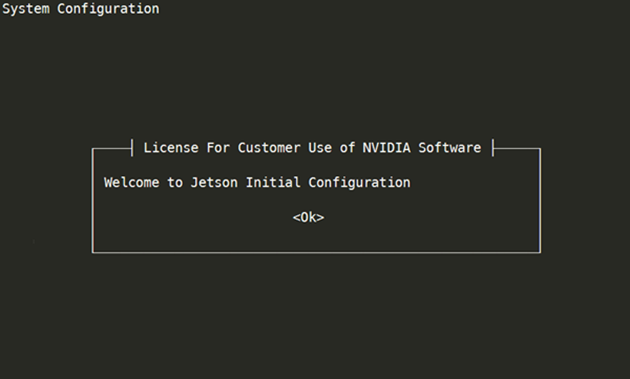
oem-configdisplays the license that governs its use. Read the license, then accept it by pressing Tab, then Enter.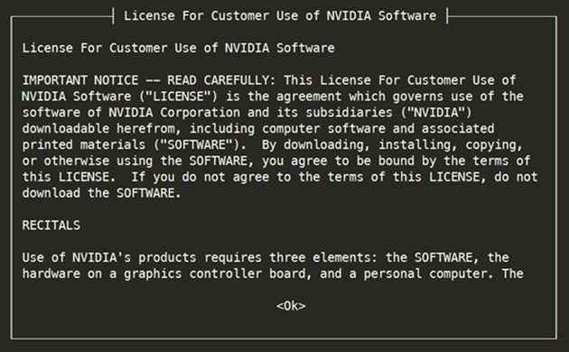
oem-configdisplays a screen that lists languages. Use the up and down-arrow keys to select the language you want to use for the installation process. Then press the Left arrow and Right arrow keys to select OK, and press Enter.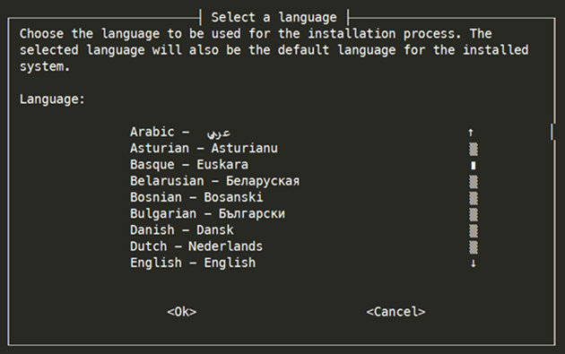
Note
To go back from any screen to the preceding one, select Cancel and press Enter. You can go back more than one screen by doing this more than once.
oem-configdisplays a screen that lists locations in which the language you selected is used. Select your location; then select OK and press Enter.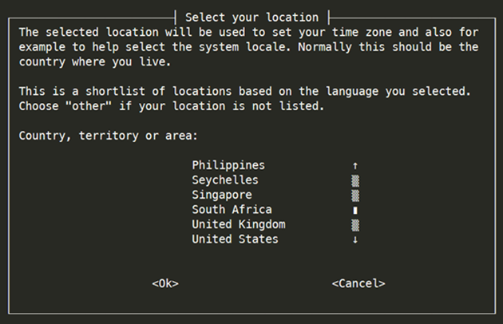
oem-configdisplays a screen that lists keyboard layouts. Select your keyboard’s layout, then select OK and press Enter.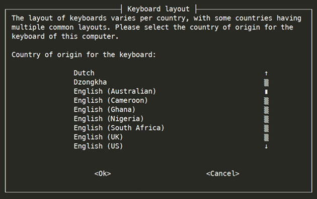
oem-configdisplays a screen that lists time zones that exist in the location you select. Select your time zone, then select OK and press Enter.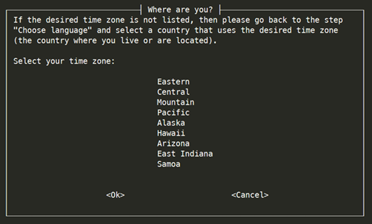
If your time zone is not listed, select Cancel as many times as necessary to go back to the screen that lists locations, and choose a different location.
oem-configasks whether you want to set the system clock to Universal coordinated Time (UTC, or Greenwich Mean Time). Linux expects the system clock to be set to UTC, so NVIDIA recommends that you select Yes and press Enter.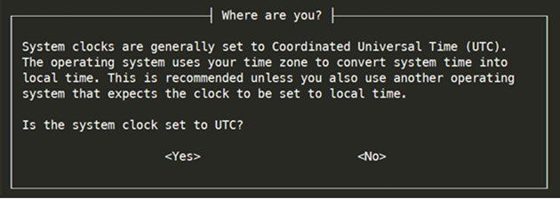
oem-configasks you to enter your name. Type your full name (for example,John Smith), select OK and press Enter.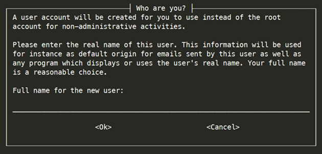
oem-configasks you to enter a username for your user account.oem-configcreates a user account with this name. Select OK and press Enter.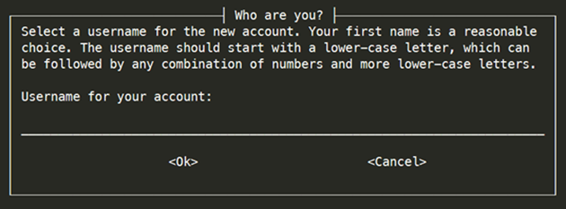
NVIDIA suggests using your first name, in lower case letters only. Use this account instead of the root account for anything other than administrative activities.
oem-configasks you to enter a password for your user account. Type a password, select OK, and press Enter.NVIDIA recommends that you choose a strong password; for example, one that is more than eight characters long and contains at least one each of uppercase and lowercase letters, numerals, and other characters. If you enter a weak password,
oem-configasks you to confirm that you want to use it.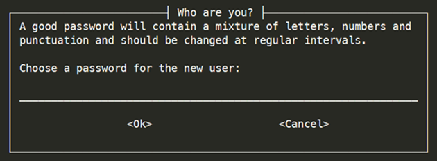
oem-configasks you to enter your password again to confirm that you entered it correctly. If you enter the same password both times, it sets the password and goes on to the next step. If not, it prompts you to enter a password again.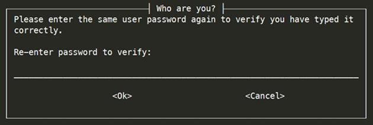
oem-configprompts you to create and enable a 4 GB swap file. It first displays a message which summarizes the advantages and disadvantages of doing so: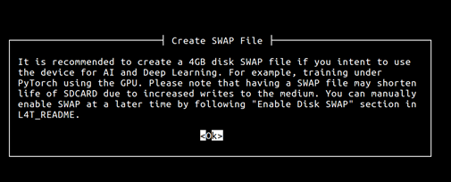
Read the message and decide whether to create a swap file. Then press Enter to advance to the next screen:
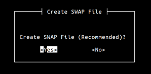
To create and enable a swap file, select Yes and press Enter. To skip this step, select No and press Enter.
Note
As the “Create Swap File” screen explains, NVIDIA recommends that you create and enable a swap file if you plan to use your Jetson device for artificial intelligence (AI) and deep learning applications.
Having a swap file might shorten the life of your SD card, due to increased writes to the medium.
If you do not create a swap file in
oem-config, you can later create one manually as described in Manually Creating and Enabling a Swap File.oem-configprompts you to specify the desired size of the APP partition in megabytes. To request the maximum possible size, leave the field empty or enter0(zero).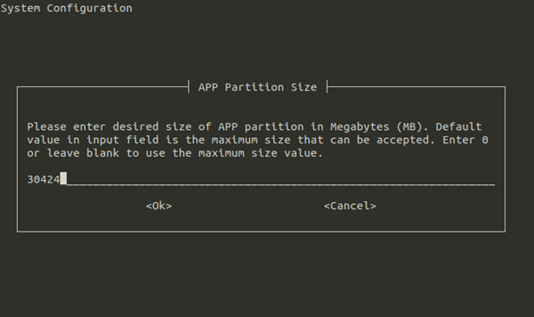
To request the maximum possible size, leave the field empty or enter
0(zero).oem-configdisplays a list of interfaces which it can use as the primary network interface during installation.If you are using Ethernet as the primary network interface, make sure that the Ethernet cable is connected. Then select the eth0: Ethernet option, select OK and press Enter.
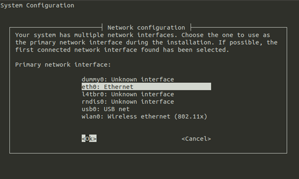
Note
Due to a known wireless network configuration bug in
oem-config, you must either enter the SSID manually instead of selecting it from the list, or wait until after initial setup is complete, and then use thenmclicommand to configure wireless networking. For more details, see the ubuntu.com documentation page Configure WiFi Connections.oem-configprompts you to enter your host computer’s host name. If you don’t know the host’s name, ask your network administrator. If you are setting up a dedicated network, you can select any name. Enter the host name, then select OK and press Enter.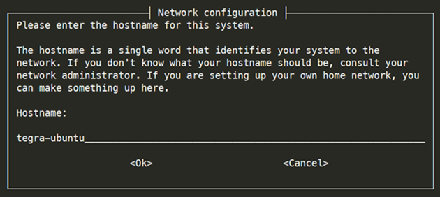
oem-configprompts you to install Chromium Browser right now. Internet connection is required for installation, and it will take several minutes to install.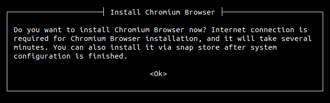
Read the message and decide whether to install Chromium Browser. Then press Enter to advance to the next screen:
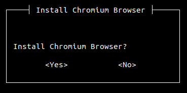
To install Chromium Browser, select Yes and press Enter. To skip this step, select No and press Enter.
oem-configreconfigures the system with your selections and proceeds to the system’s log-in prompt.
Manually Creating and Enabling a Swap File#
The following procedure is an alternative to step 12 of Reconfiguring the Target Device with oem-config. You can perform it at any time after you run oem-config.
To create the swap file, enter the commands:
$ sudo fallocate -l 4G /swapfile $ sudo chmod 600 /swapfile $ sudo mkswap /swapfile $ sudo swapon /swapfile
To automount the swap file on boot, open
/etc/fstabin a text editor, add this line, and save:/swapfile swap swap defaults 0 0
Note
The fields in this line might be separated by any combination and number of tabs and spaces. NVIDIA recommends spacing the fields to align with the fields in the file’s other lines.
Skipping oem-config#
If you don’t want to run oem-config to set up your system, you can make the first-time boot process skip it by running the host script l4t_create_default_user.sh before you flash. The boot process runs oem-config if no default user is defined; l4t_create_default_user.sh creates a default user, and thus prevents oem-config from running.
The script’s usage is:
$ l4t_create_default_user.sh [-u <user>] [-p <pswd>] [-n <host>] [-a] [-h]
This table describes the command-line options:
Command-Line Option |
Description |
|---|---|
-u <user> --username <user> |
Creates a default user with the specified
username. If omitted, the script creates
a default user named |
-p <pswd> --password <pswd> |
Creates the default user with the specified password. If omitted, the script generates a random password. |
-n <host> --hostname <host> |
Creates the default user with the
specified host name. If omitted, the
script uses the host name
|
-a --autologin |
Configures Jetson Linux to log in to the default user automatically when booted. If omitted, the user must log in manually. |
--accept-license |
Accepts the EULA for NVIDIA software. If omitted, the script prompts you to accept the EULA. |
-h --help |
Prints a description of the script’s usage. |
Examples#
Create a user named
nvidiawith the passwordNDZjMWM4and the host nametegra-ubuntu:$ l4t_create_default_user.sh -u nvidia -p NDZjMWM4
Create a user named
ubuntuwith a randomly generated password and the host nametegra-ubuntu, and configures Jetson Linux to log in to it automatically at boot:$ l4t_create_default_user.sh -u ubuntu -a
Create a user named
nvidiawith a randomly generated password and the host nametegra:$ l4t_create_default_user.sh -n tegra
Modifying Jetson RAM Disk#
Use the following procedure to modify the default configuration of a Jetson device’s RAM disk.
Modifying the RAM Disk#
Unpack your initrd:
$ sudo su $ cp <initrd_file> /tmp/l4t_initrd.img $ mkdir /tmp/temp $ cd /tmp/temp $ gunzip -c /tmp/l4t_initrd.img | cpio -i
Modify your initrd content in the
tmp/temp/directory according to your needsPackage your initrd:
$ sudo su $ cd /tmp/temp $ find . | cpio -H newc -o | gzip -9 -n > ../l4t_initrd.img
Replace the initrd with your customized initrd:
$ cp /tmp/l4t_initrd.img /boot/l4t_initrd.img
Enabling AGX Orin, Orin NX, and Orin Nano in USB3 Recovery Mode#
To enable Orin series devices in USB3 recovery mode, complete the following steps:
Download and set up the Factory Secure Key Provisioning tool.
Place the device in recovery mode and connect to the host PC.
On the host PC, navigate to the
Linux_for_Tegrafolder.Create a Fuse configuration file called
usb3.xmlwith the following content:<genericfuse MagicId="0x45535546" version="1.0.0"> <fuse name="BootDevInfo" size="4" value="0x00000900"/> <fuse name="SwReserved" size="4" value="0x00000080"/> </genericfuse>
Run the following command to use the fuse configuration file:
# For Jetson Orin NX and Orin Nano series $ sudo ./fskp_fuseburn.py --board-spec orinnano-board-spec.txt -f usb3.xml -b -K -c 0x23 -B <project_base_directory>/Linux_for_Tegra/jetson-orin-nano-devkit.conf # For Jetson Orin AGX series $ sudo ./fskp_fuseburn.py --board-spec orin-agx-board-spec.txt -f usb3.xml -b -K -c 0x23 -B <project_base_directory>/Linux_for_Tegra/jetson-agx-orin-devkit.conf
Reset the device into recovery mode and run the
$ lsusb -tcommand to confirm that the device is in USB3 mode.
Note
This step is irreversible.
Refer to Fuse Configuration File in Secure Boot and Using the Fuse Burning Toolkit for T234 from Jetson Download Center for more information about Fuse Configuration File and fskp_fuseburn.py.
Using initrd Flash with Orin NX and Nano#
Initrd flash is the official method of flashing Jetson Orin NX series and Jetson Orin Nano series with NVMe as the external storage device. You can flash it for different cases by using the following commands:
Flashing for the default case:
$ sudo ./tools/kernel_flash/l4t_initrd_flash.sh --external-device nvme0n1p1 -p "-c ./bootloader/generic/cfg/flash_t234_qspi.xml" -c ./tools/kernel_flash/flash_l4t_t234_nvme.xml --showlogs --network usb0 jetson-orin-nano-devkit external
Note
The Jetson Orin Developer Kit provides two PCIe slots to connect NVMe storage devices: the PCIe C4 slot for a longer M2.2280 NVMe card and the PCIe C7 slot for a shorter M2.2230 NVMe card.
When a single NVMe device is connected to any of the two slots, it is enumerated as
nvme0n1.When two NVMe devices are connected to the two PCIe slots simultaneously, the NVMe device in slot C4 is enumerated as
nvme0n1, and the NVMe device in slot C7 is enumerated asnvme1n1. For flashing, you should set--external-devicetonvme0n1p1ornvme1n1p1, depending on the target NVMe device being flashed. In this case, the<rootdev>must be specified asexternalso that the flashing tool sets up the kernel command line with theroot=PARTUUID=<part-uuid>option. For more information, read Workflow 3 in theREADME_initrd_flash.txtfile, which is in theLinux_for_Tegra/tools/kernel_flashdirectory.
Flashing with rootfs A/B enabled:
# Generate images for QSPI $ sudo ROOTFS_AB=1 ./tools/kernel_flash/l4t_initrd_flash.sh --showlogs -p "-c bootloader/generic/cfg/flash_t234_qspi.xml" --no-flash --network usb0 jetson-orin-nano-devkit internal # Generate images for external storage device $ sudo ROOTFS_AB=1 ./tools/kernel_flash/l4t_initrd_flash.sh --showlogs --no-flash --external-device nvme0n1p1 -c ./tools/kernel_flash/flash_l4t_t234_nvme_rootfs_ab.xml --external-only --append --network usb0 jetson-orin-nano-devkit external # Flash images into the both storage devices $ sudo ./tools/kernel_flash/l4t_initrd_flash.sh --showlogs --network usb0 --flash-only
Flashing with disk encryption enabled:
# Generate images for QSPI $ sudo ./tools/kernel_flash/l4t_initrd_flash.sh --showlogs -p "-c bootloader/generic/cfg/flash_t234_qspi.xml" --no-flash --network usb0 jetson-orin-nano-devkit internal # Generate images for external storage device $ sudo ROOTFS_ENC=1 ./tools/kernel_flash/l4t_initrd_flash.sh --showlogs --no-flash --external-device nvme0n1p1 -i ./ekb.key -c ./tools/kernel_flash/flash_l4t_t234_nvme_rootfs_enc.xml --external-only --append --network usb0 jetson-orin-nano-devkit external # Flash images into the both storage devices $ sudo ./tools/kernel_flash/l4t_initrd_flash.sh --showlogs --network usb0 --flash-only
Note
The “-i ./ekb.key” option specifies the disk encryption key. Refer to How to Create an Encrypted Rootfs on the Host in Disk Encryption.
Flashing with both rootfs A/B and disk encryption enabled:
# Generate images for QSPI $ sudo ROOTFS_AB=1 ./tools/kernel_flash/l4t_initrd_flash.sh --showlogs -p "-c bootloader/generic/cfg/flash_t234_qspi.xml" --no-flash --network usb0 jetson-orin-nano-devkit internal # Generate images for external storage device $ sudo ROOTFS_AB=1 ROOTFS_ENC=1 ./tools/kernel_flash/l4t_initrd_flash.sh --showlogs --no-flash --external-device nvme0n1p1 -i ./ekb.key -c ./tools/kernel_flash/flash_l4t_t234_nvme_rootfs_ab_enc.xml --external-only --append --network usb0 jetson-orin-nano-devkit external # Flash images into the both storage devices $ sudo ./tools/kernel_flash/l4t_initrd_flash.sh --showlogs --network usb0 --flash-only
Using flash.sh with Orin NX and Nano#
Note
The official method of flashing Orin NX and Nano is to use initrd flashing.
The memory layout used by flash.sh differs from the layout used by initrd flashing. To ensure successful OTA updates, production systems must use initrd flashing.
For development purposes, for features such as partition flashing, you might want to use flash.sh. The following flash configurations can be used with flash.sh:
jetson-orin-nano-devkit (supports SD card)
Here is an example of flashing an SD card on the Jetson Orin Nano Developer Kit:
$ sudo ./flash.sh jetson-orin-nano-devkit internal
jetson-orin-nano-devkit-nvme (supports NVME)
To flash NVME, you need to know the PCIe controller that corresponds to the connector where the NVME is inserted. The PCIe C4 slot is the longer slot and holds a M2.2280 NVME card. The PCIe C7 slot holds M2.2230, which are the shorter form factor NVME cards.
Here is an example of flashing a Jetson Orin Nano Developer Kit with an NVME that is connected to PCIe C4:
$ sudo ./flash.sh jetson-orin-nano-devkit-nvme internal
Here is an example of flashing a Jetson Orin Nano Developer Kit with an NVME that is connected to PCIe C7:
$ sudo UPHYLANE="c7x2" ./flash.sh jetson-orin-nano-devkit-nvme internal
Configuring a PXE Boot Server for UEFI bootloader on Jetson#
This section assumes that users understand how to set up their network and the configuration requirements.
The UEFI bootloader on Jetson can boot from a PXE Boot Server without using a special flashing configuration.
The PXE Boot Server comprises the following components:
DHCP server: provides the IP address information and the location of the initial application (NBP).
TFTP server: hosts the NBP and other initial files (kernel, grub.cfg, initrd, and so on).
NFS server: exposes the root file system for the boot.
The DHCP should be configured to point to the NBP program. Here is a sample configuration for the isc-dhcp` server. You need to modify the following configuration based on your network configuration and usage):
subnet 192.168.0.0 netmask 255.255.255.0 {
range 192.168.0.11 192.168.0.20;
option routers 192.168.0.1;
# Required for PXE Boot
class "pxeclients" {
match if substring (option vendor-class-identifier, 0, 9) = "PXEClient";
filename "efi/grubnetaa64.efi.signed";
# TFTP Server IP address
next-server 192.168.0.1;
option root-path "/tftp/";
}
}
host mytegra {
hardware ethernet 48:B0:2D:B1:48:25;
fixed-address 192.168.0.10;
}
The Kernel and initrd can be taken from the board support package directory as Image and initrd and are placed in the directory to which grub.cfg points.
For example, the grub config that pulls kernel/initrd from root of TFTP and boots from nfs location 192.168.42.1:/volume1/nfs_root:
set timeout_style=menu
set timeout=5
menuentry "Jetson" {
linux /Image root=/dev/nfs rw netdevwait ip=:::::eth0:on nfsroot=192.168.42.1:/volume1/nfs_root fbcon=map:0 net.ifnames=0 console=ttyTCU0,115200 firmware_class.path=/etc/firmware fbcon=map:0 net.ifnames=0
initrd /initrd
}
The TFPT server configuration using the tftpd-hpa on an Ubuntu machine:
# /etc/default/tftpd-hpa
TFTP_USERNAME="<vrlhostname>"
TFTP_DIRECTORY="/tftp"
TFTP_ADDRESS=":69"
TFTP_OPTIONS="--secure"
The kernel, the initrd, and the grub bootloader needs to be present at these locations:
/tftp/efi/grubnetaa64.efi.signed
/tftp/Image
/tftp/initrd
The NFS server /etc/exports configuration file on the NFS host with IP 192.168.42.1:
# /etc/exports
/volume1/nfs_root *(async,rw,no_root_squash,no_all_squash,no_subtree_check,insecure,anonuid=1000,anongid=1000)"
The root file system should be exported using an NFS server. After you finish configuring:
Reboot Jetson.
Press Esc during boot time to access UEFI boot menu.
select the PXEv4 boot option of the network device from which you want to boot.
Other Examples of Using flash.sh#
This section describes some other uses of flash.sh. These examples use the following command-line options.
--read-info: The flash command reads and displays board/chip/fuse info and EEPROM content from a target device. You can use this command option to get the board-spec variables. These board-spec variables might be needed in--no-flashmode. See the following note.--read-ramcode: The flash command generates a script to read ramcode from the connected target device before flashing the target device.--gen-read-eeprom: The flash command generates a read_eeprom script with all signed binaries. Later, the user can runread_eeprom.shfrom host to dump EEPROM content on a target device after putting the target device in RCM mode. Because all binaries are signed already, no key is needed even if the device has the PKC fuse burned.
Note
When --no-flash is specified in a flash command, the flash command generates a flashing script (flashcmd.txt) with all required encrypted/signed binaries for flashing.
Although the --no-flash option does not flash the target device, it needs precise board info to generate correct flashing binaries. So when --no-flash is specified, the flash command requires that either the target device is connected in recovery mode (so the correct board info is retrieved from the target device) or the correct board-spec variables are specified in the flash command.
The only exception of this requirement is for the --read-info option. In this case, a command script (readinfocmd.txt) is generated. The script can then retrieve the board-spec variables when a target device is connected.
The board-spec variables consist of the following:
BOARDID=
FAB=
BOARDSKU=
CHIP_SKU=
RAMCODE_ID=
When you specify --read-info, the flash command shows board info. From that info, you can form the corresponding board-spec variables to be used in a --no-flash command.
The following examples show various combinations of the --read-info, --read-ramcode, --gen-read-eeprom, --no-flash, and --rcm-boot options and their uses.
--read-infooption:$ sudo ./flash.sh --read-info -u <pkc> -v <sbk> jetson-agx-orin-devkit-industrial internal
Example board info output:
Board ID(3701) version(TS1) sku(0008) revision(D.0) Preset RAMCODE is 4 Chip SKU(00:00:00:90) ramcode(4) fuselevel(fuselevel_production) board_FAB(TS1) ECID is 0xE9012344705DE284200000000A0102C0
The corresponding board-spec variables for the jetson-agx-orin-devkit-industrial board:
BOARDID=3701 FAB=TS1 BOARDSKU=0008 CHIP_SKU=00:00:00:90 RAMCODE_ID=4
Example fuse info output:
==== Fuse Info (bootloader/fuse_t234.bin) ==== PublicKeyHash: ad2474627c14e3f7f4944a832bd15d0640938a3dc162f558692458f3d12f9453e11bea2ec75df3f83e8b29c47fc3d2483d528d3e94a5469c4ba1ec61f1584b23 PkcPubkeyHash1: d87796fb510d79738f8509c98511be0bb79dcc17d204a2f0f0bea9680b91bd1273ee2ae7a8a6bdb8b95deb0f421e72404939ae20d12c82649712283027201f39 PkcPubkeyHash2: 99a5b6eac64dfb29698cb684165529e5d8650c1aab0e18b677c5d5f0998af53f8a8a1f09ad1d79368bc500e57eb199e9108fc7b1499995d869b028fec3f367db BootSecurityInfo: 00002a09 ArmJtagDisable: 00000001 SecurityMode: 00000001 SwReserved: 00000000 DebugAuthentication: 00000000 OdmInfo: 00000021 OdmId: 0000001000218000 OdmLock: 00000000 ReservedOdm0: 00000000 ReservedOdm1: 00000000 ReservedOdm2: 00000000 ReservedOdm3: 00000000 ReservedOdm4: 00000000 ReservedOdm5: 00000000 ReservedOdm6: 00000000 ReservedOdm7: 00000000 Sku: 00000090 Uid: c002010a0000002084e25d7004000000 OptEmcDisable: 00000000
Example EEPROM content output:
==== EEPROM content (bootloader/cvm.bin) ==== 00000000: 02 00 fe 00 00 00 00 00 00 00 00 00 00 00 00 00 ................ 00000010: 00 00 00 0a 36 39 39 2d 31 33 37 30 31 2d 30 30 ....699-13701-00 00000020: 30 38 2d 54 53 31 20 44 2e 30 00 00 00 00 00 00 08-TS1 D.0...... 00000030: 00 00 00 00 00 00 00 00 00 00 00 00 00 00 00 00 ................ 00000040: 00 00 00 00 5f 8a e2 2d b0 48 31 34 31 30 39 32 ...._..-.H141092 00000050: 33 30 30 30 35 37 33 00 00 00 00 00 00 00 00 00 3000573......... 00000060: 00 00 00 00 00 00 00 00 00 00 00 00 00 00 00 00 ................ 00000070: 00 00 00 00 00 00 00 00 00 00 00 00 00 00 00 00 ................ 00000080: 00 00 00 00 00 00 00 00 00 00 00 00 00 00 00 00 ................ 00000090: 00 00 00 00 00 00 4e 56 43 42 00 00 4d 31 00 00 ......NVCB..M1.. 000000a0: 00 00 00 00 00 00 00 00 00 00 00 00 5f 8a e2 2d ............_..- 000000b0: b0 48 0a 00 00 00 00 00 00 00 00 00 00 00 00 00 .H.............. 000000c0: 00 00 00 00 00 00 00 00 00 00 00 00 00 00 00 00 ................ 000000d0: 00 00 00 00 00 00 00 00 00 00 00 00 00 00 00 00 ................ 000000e0: 00 00 00 00 00 00 00 00 00 00 00 00 00 00 00 00 ................ 000000f0: 00 00 00 00 00 00 00 00 00 00 00 00 00 00 00 42 ...............B
Note
The preceding fuse info is based on fuse_t234.xml in the bootloader folder.
--read-infoand--no-flashoptions:$ sudo ./flash.sh --read-info --no-flash -u <pkc> -v <sbk> jetson-agx-orin-devkit-industrial internal
The flash command generates a
readinfocmd.txtcommand script without requiring the target device to be attached. That script can then be executed when the target device is connected.To execute a
readinfocmd.txtscript:### Put the target in recovery mode $ cd bootloader $ sudo bash readinfocmd.txt
--read-ramcodeoption:$ sudo ./flash.sh --read-ramcode -u <pkc> -v <sbk> jetson-agx-orin-devkit-industrial internal
The flash command generates a command script to read the target’s ramcode before the actual flashing operation.
--read-ramcodeand--no-flashoptions:$ sudo BOARDID=3701 FAB=TS1 BOARDSKU=0008 CHIP_SKU=00:00:00:90 RAMCODE_ID=4 ./flash.sh --read-ramcode --no-flash -u <pkc> -v <sbk> jetson-agx-orin-devkit-industrial internal
The flash command includes a read ramcode command in the
flashcmd.txtcommand script. No target device needs to be connected during the flash command execution.To flash the target when the target is connected:
### Put the target in recovery mode $ cd bootloader $ sudo bash flashcmd.txt
Note
The flash commands in the preceding two examples generate
flashcmd.txtin the bootloader folder. Theflashcmd.txtscript can be run to flash devices, especially for fused devices where no PKC key or SBK key can be exposed. The ramcode is retrieved from the device before flashing.--rcm-bootand--no-flashoptions:$ sudo BOOTDEV=initrd ./flash.sh --rcm-boot --no-flash -C "console=ttyTCU0,115200" -u <pkc> -v <sbk> jetson-agx-orin-devkit-industrial initrd
The flash command generates
rcmboot_blob, which contains a command script (rcmbootcmd.txt) and all required encrypted/signed binaries. Thercmbootcmd.txtscript can then be used to run rcmboot when the target device is in RCM mode.To execute the
rcmbootcmd.txtscript:### Put the target in recovery mode $ cd bootloader/rcmboot_blob $ sudo bash rcmbootcmd.txt
Note
All binaries in the
rcmboot_blobfolder are encrypted/signed. No PKC or SBK key is needed when runningrcmbootcmd.txt.--rcm-boot,--no-flashand--read-ramcodeoptions:$ sudo BOOTDEV=initrd ./flash.sh --no-flash --rcm-boot --read-ramcode -C "console=ttyTCU0,115200" -u <pkc> -v <sbk> jetson-agx-orin-devkit-industrial initrd
The flash command is like the preceding flash command and includes a read ramcode command script in the
rcmbootcmd.txtcommand script.--gen-read-eepromoption:$ sudo ./flash.sh --gen-read-eeprom -u <pkc> -v <sbk> jetson-agx-orin-devkit-industrial internal
The flash command generates a
read_eepromcommand script with all required encrypted/signed binaries to read EEPROM content. This script does not require the user to provide PKC and SBK keys.To read EEPROM content:
### Put the target in recovery mode $ cd bootloader $ sudo ./read_eeprom.sh
Disable Bash Shell Launch for Production Devices#
The initrd file located in the root filesystem (/boot/initrd) is configured by default to launch a root bash shell. However, enabling this feature can lead to security vulnerabilities if any failures occur. Therefore, we strongly recommend disabling the bash shell launch for production devices.
In the
Linux_for_Tegra/rootfs/etc/nv-update-initrd/list.d/disable_initrd_bashfile, uncomment the following line:#/etc/.disable_initrd_bash:/etc/.disable_initrd_bash
Regenerate
Linux_for_Tegra/rootfs/boot/initrdon the host machine by using the scriptLinux_for_Tegra/tools/l4t_update_initrd.sh. For example, run the following commands:$ cd Linux_for_Tegra $ sudo ./tools/l4t_update_initrd.sh
Push the updated file to the device. Because
Linux_for_Tegra/rootfs/boot/initrdis used for RCM boot and recovery image generation, the bash shell will not be launched during RCM boot or when booting with a recovery image.